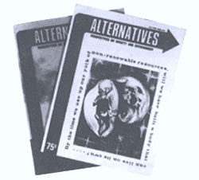

One frustration of pushing for social change or the preservation of our environment is that all the computers sometimes seem to belong to the other side. The concerned citizen may have a very strong suspicion that the facts and figures in that latest government report or glossy corporation brochure simply don't tell the whole tale...but, more often than not, he hasn't the time, energy or money to run down the "other side of the story" (even if he knows where to look).
Which is where a magazine like Alternatives comes in. This quarterly journal (subtitled "Perspectives on Society and Environment") is published by a group of faculty members and students at Trent University, Peterborough, Ontario...and if you're cultivating a backwoods distrust of academia these days, a look at any issue should convince you that scholarship is a sharp tool in the hands of committed people.
A good example is Volume 2, Number 3 (Spring 1973), which is devoted entirely to a study of the International Nickel Company's enormous mine and refining complex at Sudbury, Ontario and the effect of that operation on its employees, neighbors and surroundings. (As any driver of the Trans-Canada Highway knows, the landscape for miles around Sudbury resembles Tolkien's Mordor or the lunar surface.)
Alternatives examines INCO, and the place of nickel in Canada's economy, with a thoroughness that far surpasses the studies in the average ecology publication. The issue also includes two detailed, closely documented articles on "Atmospheric Composition and Precipitation of the Sudbury Region" and "The Effects of SO2 on Vegetation in the Sudbury Area". What the environmental damage in question means in human terms is brought home in an interview with Elie W. Martel, who represents Sudbury in the Ontario Provincial Legislature and has fought many years for a cleanup at the refinery.
All this information, of course, is ideal ammunition for the voter, taxpayer or activist...but Alternatives' INCO issue is far more than the expose of a pollution problem. In his editorial, Robert Paehlke examines the social organization that compels us to extract ever-increasing amounts of exhaustible resources at a terrible human and environmental cost, and concludes that only a deliberate limitation of economic growth will get us through the next century without catastrophe. Canada, he believes, can serve as an example to the rest of the world: "Can we not come to realize that someone must begin? If not us, who?
" True to its name, Alternatives is dedicated to seeking out social forms which will enable us to survive without Sudburys...to live in harmony with the earth and our fellow human beings. For example, Volume 3, Number 1 (Autumn 1973) was almost entirely produced by a guest staff who are members of an Ottawa-based group called the Institute for the Study of Cultural Evolution. This organization plans an experimental microculture of about 500 people as a project for the study of man's relation with his environment, and the theoretical bases for this settlement are set forth in the several articles that make up the issue.
One writer, Gary Moffatt, looks at the work of ISCE from the anarchist point of view: "Since attempts to destroy the state at the top are apt to get rather messy," he says, "the strategy is to work from the bottom to make the state unnecessary and thereby dispensable." He sees the new village as a step toward a society made up of small, self-governing, relatively independent communities.
Other members of the Institute analyze the project as an experiment in ecologically sound design. The present plan is to house the community in a complex structure based on the work of Paolo Soleri, since this concentrated dwelling space uses little land and offers many opportunities for the utilization of alternative sources of energy. Methane production, in particular, can be highly efficient under such conditions and the planners hope that a good part of the community's energy requirements can be met in this way.
Mike Nickerson, commenting on the ISCE's proposed life-support systems, echoes Robert Paehlke's warning: "We are like a chicken in an egg with a yolk of resources. By the time our yolk is used up, collectively we have to have built a body that can survive on its own or perish." If we do manage to survive, some of the credit will belong to the publications like Alternatives which are now rousing us to action and pointing out new directions for the future.
Four issues of Alternatives cost $3.00 ($3.25 U.S.) for individuals and environmental groups, $5.00 ($5.25 U.S.) for institutions and $10.00 for those who want to help the cause with a sustaining subscription. Back issues are available at $2.00 for Volume 1, Number 1, $1.50 for Volume 1, Number 2 and $1.00 for all others. Correspondence should be addressed to Alternatives, c/o Trent University, Peterborough, Ontario, Canada.-JN.
|
 |
|
|